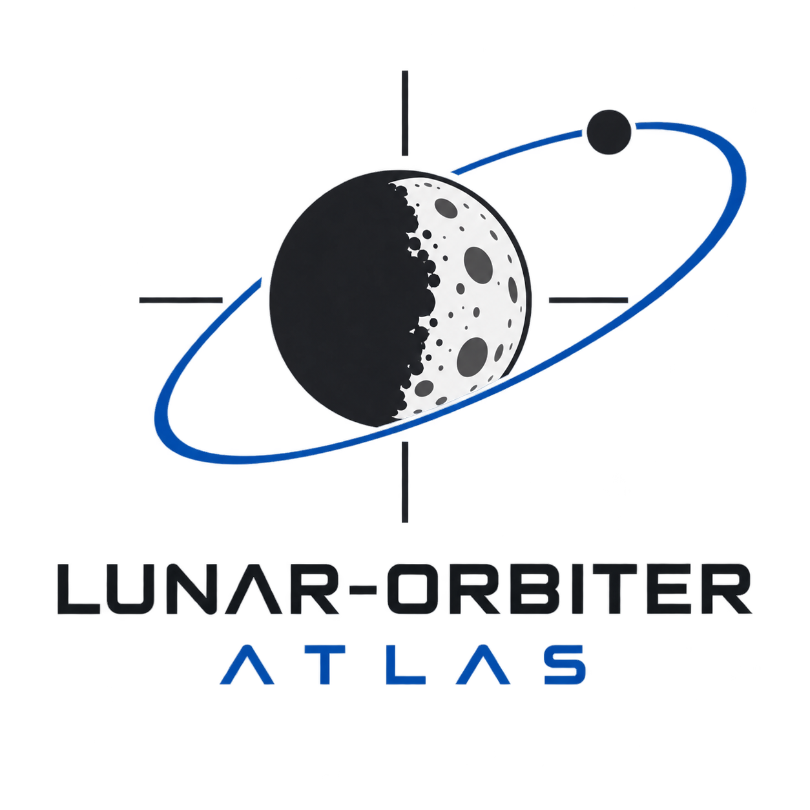
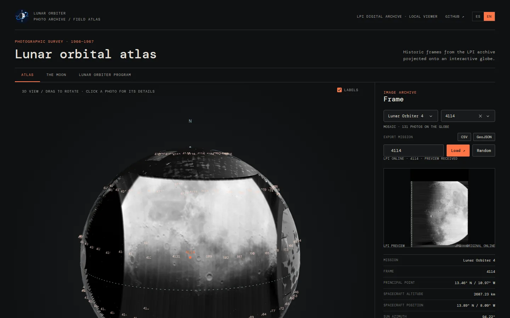

1 Introduction
Between 1966 and 1967, NASA sent five Lunar Orbiter spacecraft to map the Moon and pick safe landing sites for Apollo. Their cameras returned hundreds of frames that are still some of the most beautiful pictures of the lunar surface. The Lunar and Planetary Institute (LPI) keeps them online, frame by frame, with the metadata of every shot.
LUNAR-ORBITER-ATLAS is a local web app, written in Python with Dash and Plotly, that puts those photographs back where they were taken: on an interactive 3D Moon.
👉 https://github.com/EnriquePH/LUNAR-ORBITER-ATLAS

2 Features
- Mission mosaic. Every frame of the selected mission (890 frames over the five missions) is projected onto the part of the Moon it photographed and labelled with its frame ID.
- Picking photos. Click a photo, choose it from the selector, type its ID or press Random to show it in the side panel.
- Close-up navigation. Rotation and zoom slow down near the surface, and the camera can come down to about 17 km above it.
- Frame details. LPI preview, principal point, spacecraft altitude and position, illumination angles (sun azimuth, incidence, emission, phase), camera (80 mm or 610 mm) and ground footprint in km.
- Export. Download the loaded frames of a mission as CSV (metadata and geometry) or GeoJSON (projected footprints as polygons).
- Reference tabs. Short facts about the Moon and the Lunar Orbiter program, summarised from Wikipedia.
- English and Spanish. Switch with the ES | EN control, or open
?lang=en/?lang=es.
3 How photos are placed
The interesting part is geometry. A photo is not just pasted on the globe: each frame is projected from the spacecraft. Every pixel becomes a ray that starts at the spacecraft position published by the LPI, goes through the camera aimed at the principal point, and lands where it meets the Moon. So oblique and high-altitude shots cover the area they really saw, and pixels that look past the limb are dropped.
| Aspect | How it is handled |
|---|---|
| Camera | The 80 mm medium-resolution frame (55 × 65 mm) when the gallery has one, otherwise the middle third of the 610 mm high-resolution frame. From 46 km the model covers 31.7 × 37.5 km, against the documented 31.6 × 37.4 km. |
| Check | For the 890 frames, the emission angle implied by the spacecraft position matches the LPI’s with a median error of 0.06°. The 22 frames whose metadata disagree by more than 5° fall back to a simple north-up patch. |
| Orientation | The image rotation is not published: near-vertical frames are drawn north-up, oblique ones level with the horizon, and high-altitude frames are turned so their black sky falls off the Moon. |
| Limits | Terrain relief and lens distortion are ignored; positions are as good as the published metadata. |
The coordinate conversions are public, so they can be reused in other projects: selenographic_to_cartesian and cartesian_to_selenographic in orbiter.globe.
4 Installation
Requires Python ≥ 3.10, on Linux or macOS.
git clone https://github.com/EnriquePH/LUNAR-ORBITER-ATLAS.git
cd LUNAR-ORBITER-ATLAS
make install # create .venv and install the app
make download # optional: fetch all 890 photos now (MISSIONS="1 4" to limit)
make run # start the appThen open http://127.0.0.1:8050/. Without make:
python3 -m venv .venv
.venv/bin/python -m pip install -e .
.venv/bin/lunar-orbiterThe first time a mission is shown, the app downloads the LPI page and thumbnail of each frame (about 200 per mission) and caches them in data/lpi/, politely: three workers and at most four requests per second. Later runs work from disk.
5 Exported files
- CSV: one row per frame with the LPI metadata (principal point, spacecraft position, illumination angles, preview URL), plus
camera,footprint_width_km,footprint_height_km,projectedandimplied_emission_angle. - GeoJSON: a
FeatureCollectionwith one polygon per frame, following the outline drawn on the globe. Coordinates are selenographic degrees, east and north positive, not WGS 84.
6 License
The code is distributed under the MIT License. LPI images and metadata belong to their respective owners, and the reference tabs summarise Wikipedia articles under CC BY-SA 4.0.
7 How to cite
ENERGYCODE (2026). Lunar Orbiter Atlas, version 1.0.0.
https://github.com/EnriquePH/LUNAR-ORBITER-ATLASFor photographs or metadata, also cite the LPI Lunar Orbiter Photo Gallery and the frame record used.